地政学
コルカタは東インドの玄関で、バングラデシュ、北東部、ベンガル湾を結びます。旧英領首都の制度、港、鉄道、国境移動の記憶が重なり、デリーやムンバイとは違う東方への視線を保ちます。今も濃い都市です。要。

🇮🇳 インド / 西ベンガル州 / World City Atlas
フーグリー川に沿う東インドの港湾都市です。植民地首都の記憶、ベンガル文化、ドゥルガー・プージャ、港湾物流、教育、貧困、湿地と洪水リスクが重なる大都市です。
都市の骨格
コルカタはフーグリー川の港、ハウラーの鉄道、東コルカタ湿地、北部の旧家、南部の住宅地、東部のIT地区を抱えます。植民地都市の形を残しながら、祭礼、出版、教育、移民労働、洪水への備えが日常の輪郭を作っています。
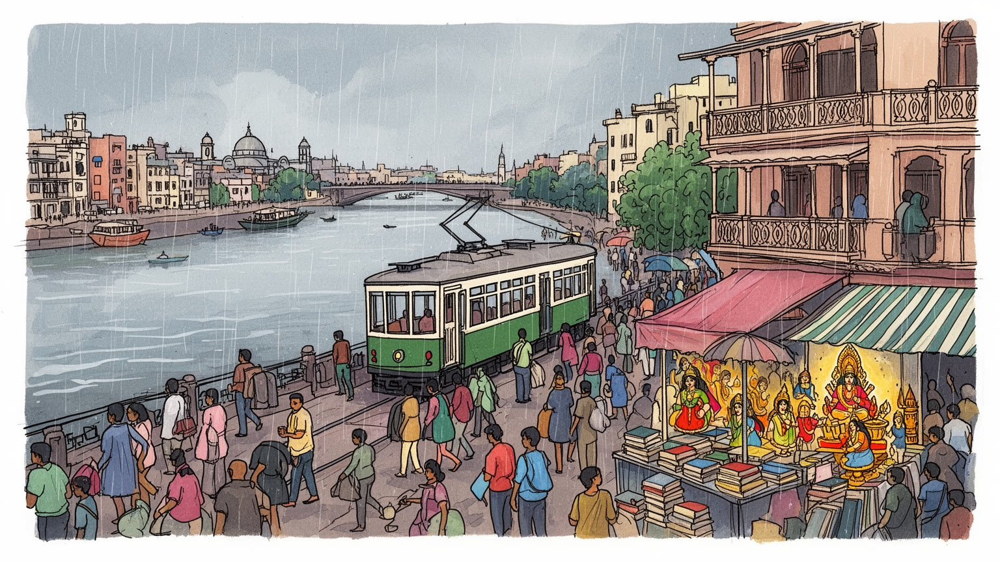
コルカタは東インドの玄関で、バングラデシュ、北東部、ベンガル湾を結びます。旧英領首都の制度、港、鉄道、国境移動の記憶が重なり、デリーやムンバイとは違う東方への視線を保ちます。今も濃い都市です。要。
港湾物流、黄麻、金融、IT、教育、医療、出版、軽工業、屋台商いが都市を支えます。組合、配達、家事労働、移民労働も厚く、古い工業とサービス化の摩擦が街路に残ります。現場の力も残る都市です。粘りもあります。
ベンガル文学、映画、新聞、演劇、大学の議論、プージャ、カーリー信仰、イスラム、教会の記憶が重なります。信仰は名所でなく、工房、寄付、食、家族の暦を動かします。クリケットとサッカーも街を熱くします。
観光客は川辺、ヴィクトリア記念堂、カーリー寺院、書店街、市場を巡ります。住民には湿気、排水、渋滞、家賃、教育費、就職難が現実です。魅力は暮らしの粘りと問題の近さ、夜の祭礼の音にもあります。街は濃いです。
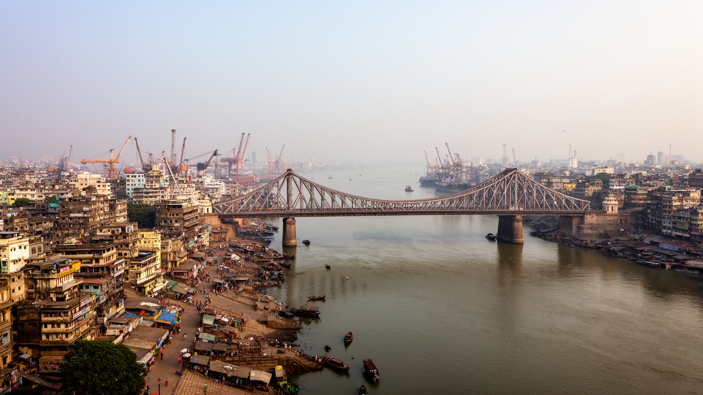
コルカタの骨格はフーグリー川に沿って読めます。東岸に旧市街、官庁街、商業地区が伸び、西岸のハウラーは鉄道駅と工業地帯を通じて都市圏を支えます。橋、渡船、ガート、倉庫、港湾道路は、通勤と物流だけでなく、祈りや火葬、朝の沐浴、川辺の休息も運びます。東へ目を向ければ湿地と新興地区があり、南には中間層の住宅地が広がります。川は外へ開く窓である一方、堆積、潮位、排水、サイクロンへの弱さも示します。都市の距離は地図上の直線ではなく、橋の混雑、駅の乗換、雨季の水はけによって感じられます。港の力が相対的に下がっても、川は物流、宗教、記憶、都市景観を結ぶ中心であり続けます。河岸の再開発では、遊歩道や眺望だけでなく、荷役、渡船、露店、巡礼者が使う場所をどう残すかが問われます。港と駅の周辺では低賃金の労働、宿泊、食堂、修理業が細かく結びつき、都市の安さを支えています。近年の東部開発はITや住宅を受け入れますが、湿地と水路の機能を弱めると、遠くの新興地区の選択が旧市街の浸水にも響きます。川の都市は海から離れていても、潮、雨、物流、信仰を通じて外部世界と結ばれます。コルカタを理解するには、ヴィクトリア記念堂だけでなく、ハウラー橋の人波、河岸の小さな船、湿地へ抜ける水路までを一続きの都市装置として見る必要があります。
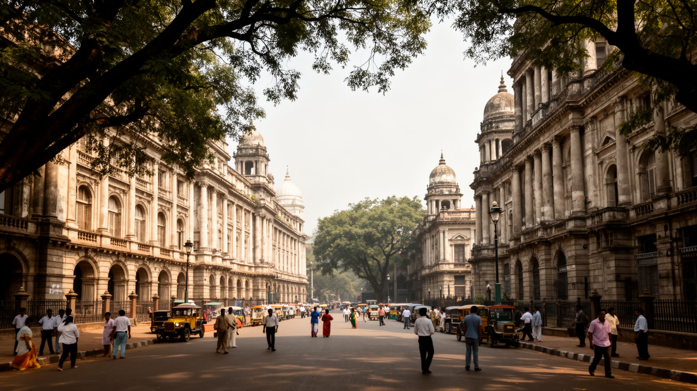
コルカタは長く英領インドの首都で、行政、裁判所、商社、銀行、軍、教育機関が集められました。マイダン、ヴィクトリア記念堂、ライターズ・ビルディング、セント・ポール大聖堂は、帝国が都市空間に刻んだ権力の形です。しかし旧首都の記憶は支配の記念だけではありません。新聞、大学、法律家、学生運動、労働運動、民族主義の言葉も同じ街路で鍛えられました。欧州人地区、商人街、現地住民の密集地という区分は衛生と階層の差を残し、独立後も建物の使い方や地価に影を落としました。観光客が見る壮麗なファサードの背後には、飢饉、分割、警察、港湾労働、使用人の仕事もあります。首都がデリーへ移った後も、旧首都としての自負と喪失感は行政、文化、政治の言葉に残りました。植民地建築は官庁、学校、教会、商業施設として使われ続け、批判と利用が同時に進んでいます。石造の大通りから少し入れば、狭い路地、古い共同住宅、倉庫、印刷所があり、帝国の計画が現地の生活に飲み込まれてきた過程が見えます。建築の豪華さだけを切り取ると、都市を動かした無名の労働と抵抗は消えてしまいます。だから歩く順路も大切です。保存は美しい外観を残すだけでは足りません。誰の記憶を語り、誰の痛みを沈黙させるのかを問うことが、旧首都を現在の市民社会へ開く条件になります。今も重要です。
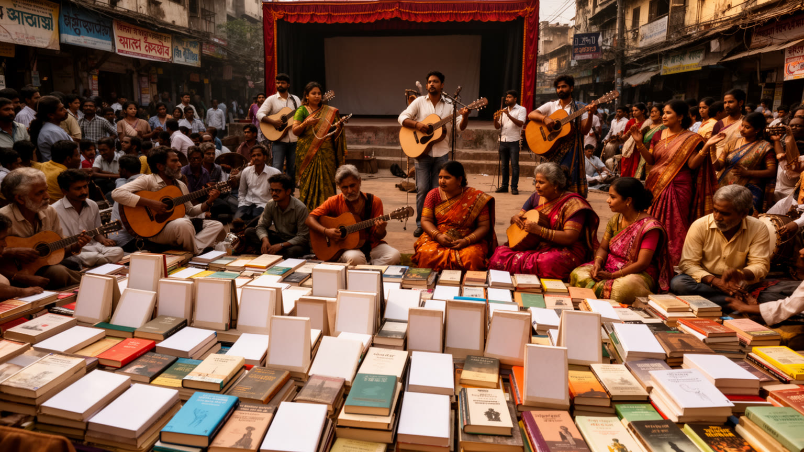
コルカタはベンガル語の文学、新聞、演劇、映画、音楽、批評の都市として知られます。タゴールやサタジット・レイの名だけでなく、カレッジ・ストリートの古本、大学の壁新聞、小劇場、映画クラブ、地域の音楽教室、家庭で読まれる日刊紙、ラジオ、ベンガル語テレビが文化の厚みを作ります。知的な議論は都市の誇りですが、中産階級の自己像に偏ると、労働者、移民、少数派、女性の経験が語られにくくなります。マイダンのサッカー、Eden Gardensのクリケット、映画音楽、祭礼の太鼓は、読書や議論とは違う入口から都市の感情を動かします。出版不況、劇場の維持費、若者の就職難、英語とベンガル語の階層差も現実です。それでも、小さな雑誌や朗読会、祭礼の脚本、食堂での政治談義は、都市が自分を批評する力を保たせます。映画館が閉じ、書店の売上が揺らいでも、家庭の本棚、学校の発表会、近所の音楽教室は文化を日常へ戻します。新しい配信やSNSは表現の入口を広げる一方、静かな読書や長い議論の場を細らせる面もあります。文化は観光用の飾りではなく、生活の悩みを共有し、記憶を保存し、社会の矛盾を言葉にする方法です。祭礼の装飾、映画音楽、新聞の論説、茶店の会話は別々の領域に見えて、同じ公共空間で互いに影響します。文化の密度は名所の数ではなく、普通の人が語り、聞き、反論できる場所の多さに現れます。
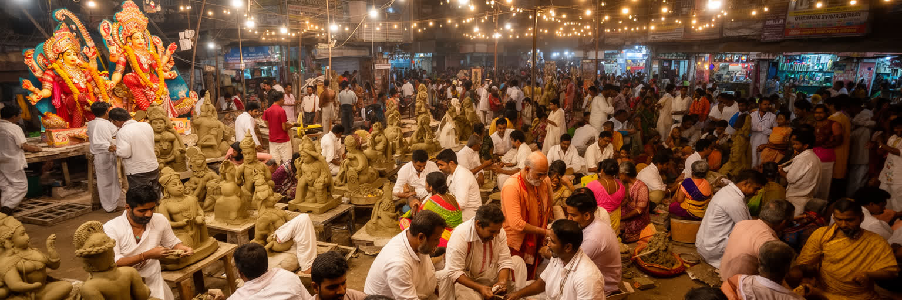
ドゥルガー・プージャは、コルカタの宗教生活を最も強く可視化する季節です。地域ごとに仮設の祭壇が立ち、職人、電気工、音響、警備、寄付、屋台、家族の訪問が一斉に動きます。クマルトゥリの像作りは観光的にも有名ですが、粘土、竹、布、塗料、運搬、資金集め、長時間労働がなければ祭りは成立しません。カーリー信仰、モスク、教会、墓地、少数共同体の記憶も都市の宗教地図を形作ります。祭礼は近隣を結び、夜の歩行を増やし、工房や露店に収入をもたらしますが、道路混雑、音、廃棄物、政治的後援、資金競争も伴います。仮設の空間は数日で消えますが、準備のための寄付、会合、注文、作業場の緊張は何カ月も続きます。家族が親戚を訪ね、若者が夜の街を歩き、店が季節収入を得ることで、都市の時間は祭礼を中心に組み替わります。祭りはヒンドゥーの儀礼でありながら、設営、商売、見物、交通整理を通じて多くの住民を巻き込みます。その開放性と競争性が、コルカタの近隣社会の強さと緊張を同時に示します。寄付額や装飾の規模は地域の名誉にもなります。巨大な祝祭ほど、警察、交通、清掃、医療、電力の調整が都市運営そのものになります。光の背後で誰が作り、誰が片づけ、誰が安全を守るのかを見れば、信仰が建物ではなく労働と近所の関係で支えられていることが分かります。
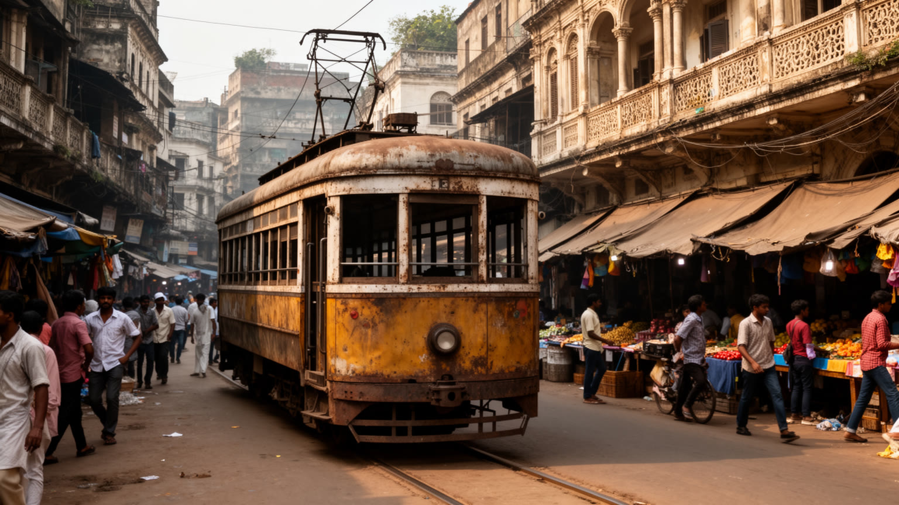
コルカタの街路は、地下鉄、郊外鉄道、バス、黄色いタクシー、オートリキシャ、フェリー、徒歩、そして路面電車の記憶が重なります。路面電車は速度や路線の面で中心的な交通ではなくなりましたが、街の時間感覚を象徴し、道路の上に公共交通の歴史を残しています。駅前や市場の周りでは、茶の売り子、新聞、花、軽食、修理、荷運び、配達員が人の流れに沿って働きます。交通政策が渋滞緩和だけを目標にすると、歩道の屋台や小さな商いは邪魔者にされやすい一方、それらは低い資本で働く入口でもあります。ハウラーやシアルダーの駅前では、長距離の移動と日々の通勤がぶつかり、荷物、家族、露店、バス待ちが狭い空間を分け合います。公共交通の運賃が安いことは、学生や低賃金労働者にとって都市へ参加する条件でもあります。歩道が狭い場所では、歩行者、屋台、駐車、排水溝が競合し、足元の安全がそのまま生活の質になります。フェリーや橋の選択も、時間、料金、天候、荷物の量で毎日変わります。雨季の冠水、暑い停留所、橋の混雑、夜の帰宅は、生活の公平性を測る現場です。バスの警笛、湿った排気、揚げ物の匂い、新聞売りの声は、移動を単なる交通ではなく街路生活として感じさせます。速い移動を増やしても、最後に歩く道が危険なら都市は便利になりません。駅や車両だけでなく、待つ場所、買う場所、休む場所、働く場所が同じ街路に折り重なる様子を見る必要があります。
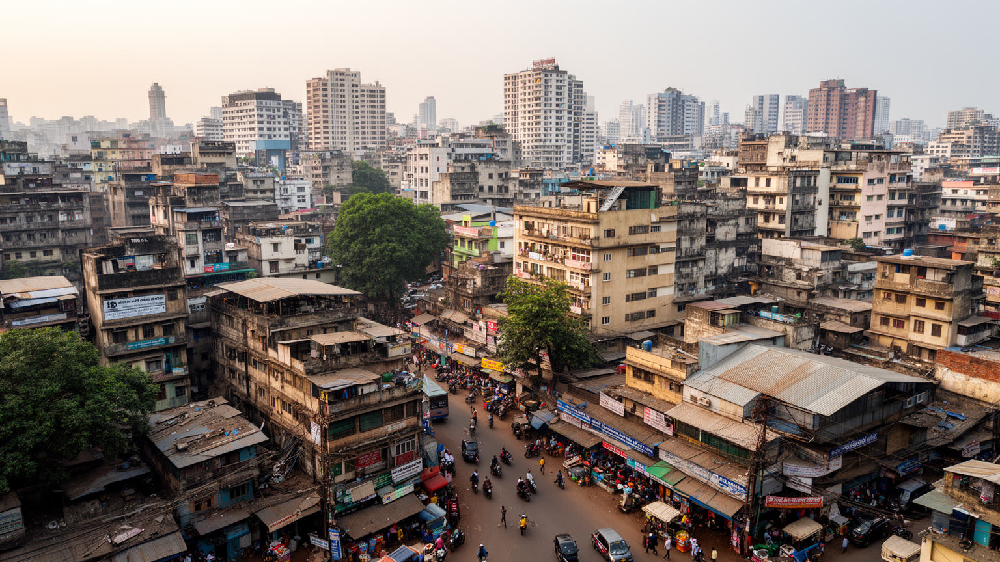
コルカタの経済は一枚の成長物語では語れません。港湾物流、黄麻、茶の取引、皮革、印刷、金融、保険、教育、医療、映画、IT、零細小売が並び、古い産業基盤と新しいサービスが同時に動いています。黄麻工場や港の仕事は、西ベンガルだけでなくビハール、オディシャ、ウッタル・プラデーシュから来た労働者にも支えられてきました。組合の強さは政治文化を作りましたが、投資不足や産業停滞と結びつけて語られることもあります。実際の都市経済は、屋台、配達、家事労働、病院の補助業務、修理、縫製といった統計に出にくい仕事にも依存しています。塩湖地区やニュータウンのITオフィスは新しい雇用を作りますが、中心部や工業地帯の低賃金労働と同じ都市にあります。若者が他都市へ移る背景には、給与だけでなく、昇進、住宅、職場の選択肢への不安があります。港の水深、道路混雑、電力、土地利用、行政手続きは、企業誘致と物流の競争力を左右します。医療や教育の集積は周辺州から人を呼びますが、家族の宿泊、通訳、費用負担も地域経済を作ります。英語教育やデジタル技能に届く人と、身体労働に残る人の差は広がりやすく、女性の就労には安全、家族の期待、賃金の壁があります。成長地区を見るだけでなく、古い工場跡と低賃金労働をどう次の雇用へ接続するかが、この都市の経済的な課題です。
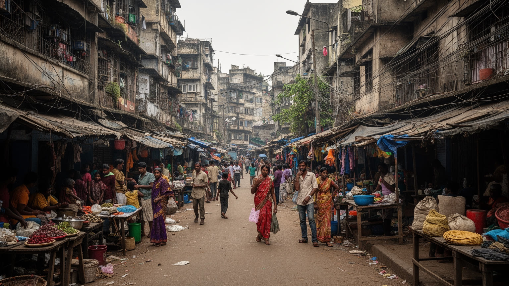
コルカタの近現代史は、ベンガル分割と移民の記憶なしには読めません。独立と分離独立、東パキスタンからバングラデシュへ至る政治の変化は、多くの家族に移住、喪失、再定住をもたらしました。東ベンガルから来た人々は、キャンプ、占拠地、郊外住宅、学校、商店、職場を通じて都市を作り直しました。ビハールやオディシャから来る労働者、マルワリ商人、中国系やアルメニア系の記憶も、商業と食文化の層を加えています。移民は活力をもたらしますが、住居の不安定さ、差別、非正規労働、教育へのアクセスの差を抱えやすくなります。スラムや低所得地区は単なる欠乏の場所ではなく、職場に近く、親族や同郷者の支援を得る生活戦略でもあります。女性や子どもは、水、トイレ、通学、安全、医療の不足をより直接に受けやすく、貧困は所得だけでなく時間と移動の制約として現れます。地域の寺院、モスク、クラブ、茶店は、仕事の紹介や緊急時の支えにもなります。古い難民地区が正規の町へ変わるまでには、土地権利、道路、水道、学校をめぐる長い交渉がありました。新しく来る労働者も、その歴史の上で安い部屋と仕事のつてを探します。貧困対策を住宅の撤去だけで考えると、仕事、通学、医療、近所の助けまで壊してしまいます。コルカタのベンガルらしさは単一ではなく、移動してきた人々の言葉、食、痛み、再出発によって作られてきました。
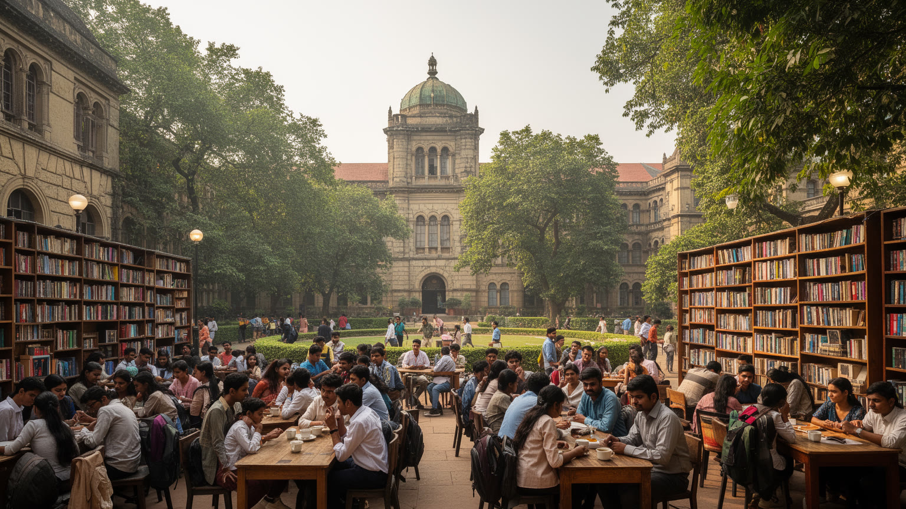
コルカタは大学、研究機関、図書館、出版社、新聞、予備校が密集する教育都市でもあります。コルカタ大学、ジャダブプル大学、プレジデンシー大学などは、学問だけでなく政治討論、学生運動、演劇、出版、就職準備を通じて都市の公共性を育ててきました。教育は上昇の道ですが、授業料、英語力、家庭の収入、通学距離、性別の期待によって機会は均等ではありません。中間層の家庭では、子どもの進路が家計と移住の判断を左右し、若者がベンガルール、デリー、ムンバイ、海外へ出る流れもあります。知識人の都市という自負は強い一方、議論が特定の階層に閉じると、屋台労働者、介護、移民、女性の安全といった現実が周縁化されます。大学周辺の安い食堂、古本屋、印刷所、学生寮は、知識を支える日常のインフラです。図書館で試験勉強をする学生、夕方に家庭教師へ向かう教師、古本を値切る親子は、都市の教育熱を具体的に示します。学問の蓄積が雇用へつながらない時、知識都市の誇りは若者の焦りにも変わります。医師、弁護士、公務員、技術者を目指す道は尊重されますが、試験競争は家計と心身に重い負担をかけます。教育が都市の希望であるほど、失敗した時の孤立をどう防ぐかも公共の課題になります。研究成果や名門校だけでなく、学費を払う親、夜に働く学生、試験に落ちた若者まで含めて見ることで、教育都市としてのコルカタの希望と不安が見えてきます。
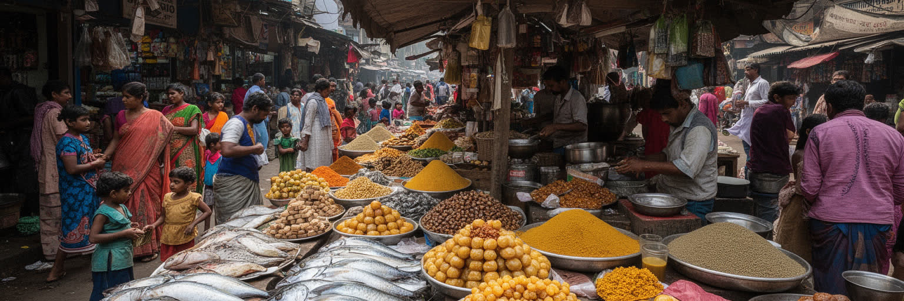
コルカタの食は、魚、米、マスタード、甘味、茶、屋台料理、ムグライ料理、中華系の影響、ベンガル家庭料理が重なります。市場では魚の鮮度と値段が会話を生み、甘味店ではロショゴッラやサンデシュが贈答と日常をつなぎます。カティロール、プチカ、チョウメン、ビリヤニ、茶店の小さなカップは、学生、労働者、家族、観光客を同じ街路に集めます。食の豊かさの背後には、早朝の仕入れ、氷、排水、衛生、女性の家事労働、屋台の不安定な営業権があります。市場は交流の場であると同時に、物価上昇、立ち退き、廃棄物処理の課題を抱えます。宗教や階層によって食卓は異なり、断食、供物、祝い菓子、肉料理の選び方にも共同体の記憶が映ります。安い一皿は、長い流通と低い賃金、家族経営の長時間労働によって保たれている面があります。祭礼の時期には甘味や外食が増え、市場の仕入れ、臨時雇用、家計の支出も大きく動きます。茶店は飲食店であると同時に、求人、政治、近所の噂が流れる情報の場でもあります。川と海から入る魚、郊外の野菜、港を通る香辛料は、都市が広い後背地に依存していることを示します。季節の魚や雨の日の値上がりも、家計の会話になります。高級店だけを見ても実像は見えません。朝の魚市場、昼の定食、夕方の茶店、祭礼の供物を追うと、誰が作り、誰が座り、誰が路上で働くのかが見えてきます。
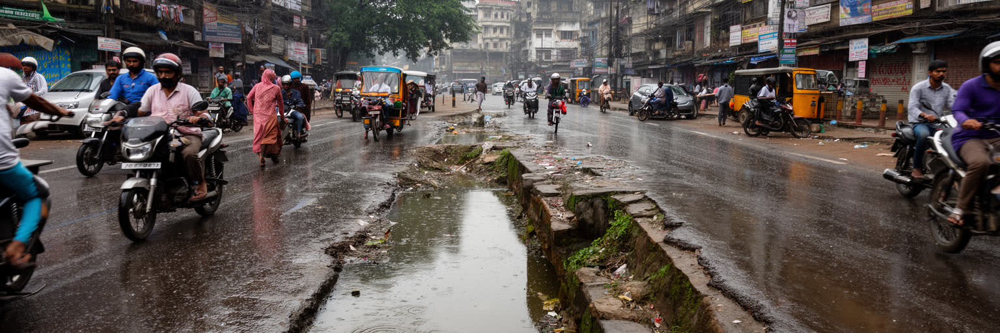
東コルカタ湿地は、郊外に残った自然風景ではなく、排水、魚の養殖、農地、廃水処理、生計を結ぶ重要な都市基盤です。コルカタは低地の熱帯モンスーン気候にあり、強い雨、暑熱、サイクロン、高潮、河川の増水、排水不良にさらされます。湿地は水を受け止め、都市の廃水を生物的に浄化し、食料と仕事を生みますが、宅地開発や道路、埋め立ての圧力を受け続けています。浸水は低所得地区ほど通勤不能、学校休校、感染症、医療費の増加として重くのしかかります。暑熱は屋外労働者、高齢者、換気の弱い住宅に厳しく、欠勤や健康被害にもつながります。排水路が詰まる原因には、ごみ、舗装、建設、管理不足が絡み、雨のたびに行政と住民の関係が試されます。サイクロン後には電力、通信、飲み水、医療へのアクセスの差が、被害の差として現れます。開発で池や水路が消えると、被害はその土地だけでなく下流の古い地区にも広がります。暑さを避ける木陰、公園、公共の水場、冷房のない住宅への支援も、気候適応の一部です。環境保全は景観の問題ではなく、洪水、衛生、貧困、食料供給を左右する生活の問題です。毎年の雨は都市計画の弱点を正直に示します。湿地で働く人の知識を政策に入れなければ、保全は生計を奪う言葉にもなります。雨水を逃がす余地を守ることは、都市の安全保障そのものです。
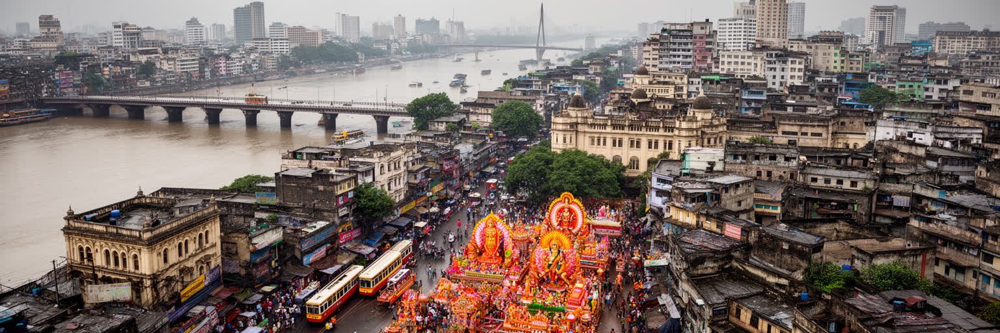
コルカタを世界都市として読む価値は、現在の経済規模だけでは測れません。旧首都の制度、ベンガル文化、港湾、黄麻、労働運動、分割の記憶、ドゥルガー・プージャ、湿地、映画、出版、屋台、古い住宅、若者の移動が同じ都市圏に集まっています。ムンバイの金融、デリーの政治、ベンガルールのITとは違い、コルカタは東インドとベンガル湾、バングラデシュ、北東部への視線を持つ文化的な結節です。一方で、産業停滞、雇用難、老朽インフラ、浸水、住宅格差、環境リスクは、都市の誇りだけでは隠せません。文学的で懐かしい街並みの背後には、低賃金労働、移民の生計、排水の維持、祭礼を支える手仕事があります。旧首都の自負は時に現在の弱さを覆いますが、記憶を持つ都市だからこそ社会を批評する力も残ります。若者の流出とIT地区、古い工場跡と湿地保全を同時に見る姿勢が必要です。観光の一日で見える川辺や建築と、住民が何年も経験する仕事、学校、水害、家族の移動は違います。その差を意識すると、都市の魅力と負担を同じ画面で捉えられます。古い都市であることは停滞の別名ではなく、制度や記憶を問い直す材料を多く持つという意味でもあります。順位ではなく層の厚さがこの都市の意味を作ります。川、湿地、橋、市場、祭礼、書店、工場跡を一緒に見ると、コルカタは過去の博物館ではなく、社会が毎日交渉される現場として立ち上がります。